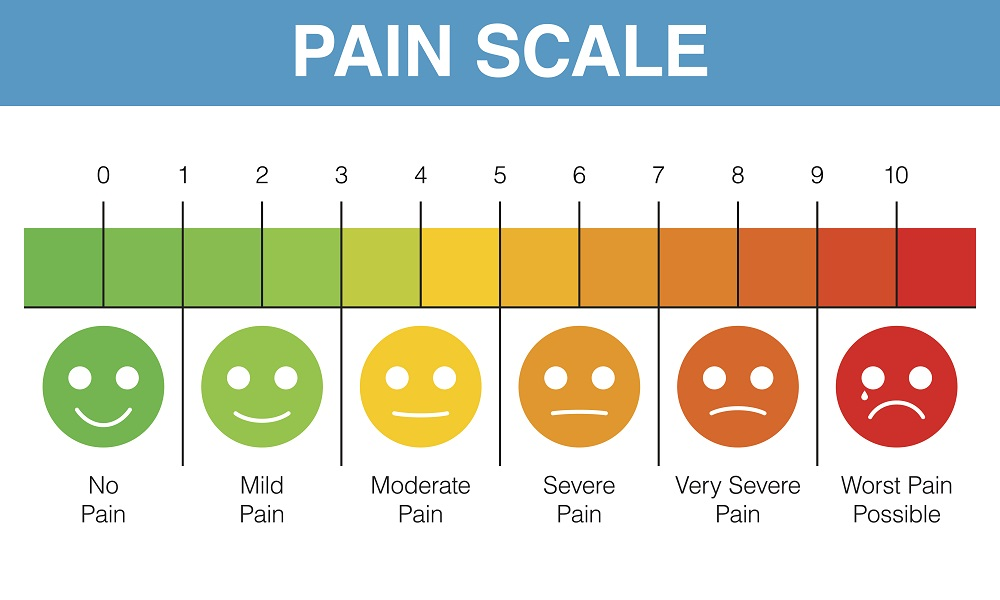
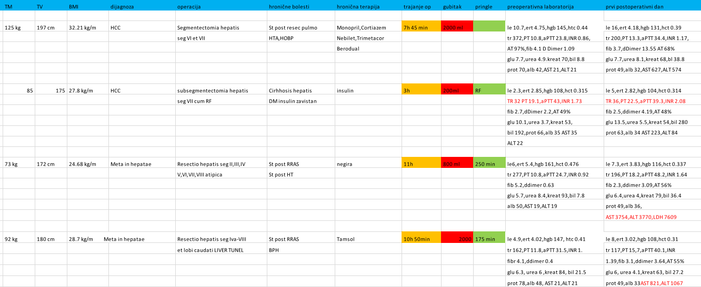

| Nedelja | Tema |
|---|---|
| 1 | Introduction to Medical Statistics |
| 2 | Data Sorting |
| 3 | Statistical description of data |
| 4 | Probability and probability distributions |
| 5 | Population and Sample |
| 6 | Testing Hypotheses About Population Means and Proportions |
| 7 | Frequency Hypothesis Testing |
| 8 | Rank Hypothesis Testing |
| 9 | Correlation |
| 10 | Regression / Colloquium |
| 11 | Data, information and knowledge |
| 12 | Health information system |
| 13 | Diagnostic accuracy measures |
| 14 | Medical decision-making |
| 15 | Bioinformatics |
Introduction to Statistics
Dr Nikola Grubor
2024-10-13
What is statistics for?
- Applied scientific method
- Discovery of treatment effect (drug, intervention)
- Predicting risk (e.g., thrombosis)
- Medical decision making (diagnostic test accuracy)
Hypertension treatment effect
What is the recommendation based on? Does it make sense?
Risk prediction
Is pulse pressure or systolic pressure responsible for most of the risk of hemorrhagic stroke?
How much better is ultrasound at detecting gallstones than CT?
Laboratory values
Does this patient with this lab value have a disease risk that requires further investigation?
Course
- Lesson (\(\gt\) 50% \(\rightarrow\) opens quiz)
- \(\text{Points} = \text{lesson} + \text{quiz (time limited)} + \text{colloquium} + \text{exam}\)
- Exam (practical and theoretical part; computer-based assessment in the classroom)
Course structure
Critical state of science in medicine
“The case against science is straightforward: much of the scientific literature, perhaps half, may simply be untrue. Afflicted by studies with small sample sizes, tiny effects, invalid exploratory analyses, and flagrant conflicts of interest, together with an obsession for pursuing fashionable trends of dubious importance, science has taken a turn towards darkness.”
1,693,059 publications on PubMed in 2023!
How often do results replicate?
After 2000 the FDA requires preregistration

Definition
Statistics is the science of decision making
in conditions of uncertainty
Basic terms
%%{ init: { 'flowchart': { 'curve': 'monotoneX' } } }%%
%%| fig-align: center
%%| fig-height: 10
flowchart LR
A[Base Set] --> B[Sample]
B --> C[Unit of observation]
C --> D[Variables]
D --> E[Measurement]
E <--> TT["Accuracy\nPrecision\nReliability\nValidity"]
TT <--> F
E <--> TP["Data Type"]
TP <--> F
E --> F[Data]
F --> G[Analysis]
G --> H[Conclusion]
H -->|generalization|A
The research question
Defining the research question (estimand) is something that is mostly forgotten when designing a study.
%%{ init: { 'flowchart': { 'curve': 'monotoneX' } } }%%
%%| fig-align: center
%%| fig-width: 4
flowchart TD
I[Reseach question] -.-> A
A[Basic set] --> B[Sample]
B --> C[Unit of observation]
C --> D[Variable]
Example: research question
%%{ init: { 'flowchart': { 'curve': 'monotoneX' } } }%%
%%| fig-align: center
%%| fig-width: 8
flowchart TD
I[Reseach question] -.-> A
A[Basic set] --> B[Sample]
B --> C[Unit of observation]
C --> D[Variable]
%%{ init: { 'flowchart': { 'curve': 'monotoneX' } } }%%
%%| fig-align: center
flowchart TD
I["Is the degree of degeneration\nof the lumbosacrum on X-ray\nassociated with pain?"] -.-> A
A[Patients with lumboischialgia] --> B[n patients]
B --> C[Patient]
C --> D["Degree of degeneration, pain"]
James Lind’s research
The first medical database
| study_id | treatment | gum_rot_d6 | skin_sores_d6 | fit_for_duty_d6 |
|---|---|---|---|---|
| Notes: Abridged database of original data collected by James Lind; d6, on day 6. | ||||
| 001 | cider | 2_moderate | 2_moderate | 0_no |
| 002 | cider | 2_moderate | 1_mild | 0_no |
| 003 | dilute_sulfuric_acid | 1_mild | 3_severe | 0_no |
| 004 | dilute_sulfuric_acid | 2_moderate | 3_severe | 0_no |
| 005 | vinegar | 3_severe | 3_severe | 0_no |
| 006 | vinegar | 3_severe | 3_severe | 0_no |
| 007 | sea_water | 3_severe | 3_severe | 0_no |
| 008 | sea_water | 3_severe | 3_severe | 0_no |
| 009 | citrus | 1_mild | 1_mild | 0_no |
| 010 | citrus | 0_none | 0_none | 1_yes |
| 011 | purgative_mixture | 3_severe | 3_severe | 0_no |
| 012 | purgative_mixture | 3_severe | 3_severe | 0_no |
Measurement
- The method of measurement is very important
- Accuracy, reliability, validity, missing data

Picasso’s drawing of a dog.
Patient responses to blood pressure measurement
Data types
Data consists of variables. Variables represent a measure of some phenomenon.
- Qualitative (describe the phenomenon)
- Quantitative (assign a numerical value)
Important
“What is your favorite food?”, to which the answers are: grapes, chocolate, carbonara, pizza and mango. This data is not numerical; but we often assign it numbers (1 = grapes, 2 = chocolate, etc.), however in this case the numbers serve as labels, not real values.
Qualitative data
| What is your favorite subject? | Number of students |
|---|---|
| Pathology | 105 |
| Statistics | 20 |
| Pathophysiology | 4 |
Note
The students’ answers are qualitative, but they can be turned quantitative by summarizing.
Number types lead to data types
- Binary numbers (Yes/No; 1/0;
TRUE/FALSE) - Integers (\(\mathbb Z\)) (“Agreement on a scale of 1 to 7?”)
- Reals (\(\mathbb R\)) (most common, \(3.12...\), \(9.81...\))
Discontinuous (discrete) and continuous measurements
Discontinuous (discrete) measurements are qualitative or can be expressed with integers (whole numbers)
Example
Number of births: 3, no sense in talking about 3.5 births!
Continuous measurements are expressed by real numbers
Example
When we measure weight in \(kg\) we usually round the numbers so they look whole, but it sill makes sense to talk about more precise measurements (\(70 \; \text{kg}\), \(70.3467 \; \text{kg}\)).
Measurement scales (1)
Variables must have at least two values (otherwise they would be constants).
Variable values have different relationships:
- Identity: Each value is unique.
- Size (magnitude): Some values are larger than others.
- Equal intervals: The difference between 1 and 2 is the same size as between 19 and 20.
- Absolute zero: The scale has a zero that is meaningful.
Measurement scales (2)
- Nominal scale (identity; 1 - Diabetes, 2 - Hypertension)
- Ordinal scale (identity and size; 1 - Primary education, 2 - Secondary school)
- Interval scale (identity, magnitude, and equal intervals; Celsius, Fahrenheit)
- Ratio scale (all + absolute zero; Kelvin, height, weight)
| Scale | Equal/Not Equal | >/< | +/- | Multiplication/Division |
|---|---|---|---|---|
| Nominal | OK | |||
| Ordinal | OK | OK | ||
| Interval | OK | OK | OK | |
| Ratio | OK | OK | OK | OK |
Nominal data
- Unique values
- They have no minimum or maximum
- No natural ordering
Ordinal data
- Discrete (integers)
- Defined minimum and maximum
- Defined order
- The “distance” between the categories is unknown
Numerical data

- Whole numbers are discontinuous
- Continuous data can be arbitrarily precise
Warning
Ordinal and discrete numerical data can look similar. The difference between them is that the numbers in ordinal data are only labels, not real values. Continuous and discontinuous data may look similar if rounded (50kg, 60kg, 75kg), but we always have the option to display them more precisely.
Guess the data type?
- ABO
- Pain (NRS 0-10 scale)
- M/F
- Stage (I-IV)
- TA (mmHg)
- Heart rate (bpm)
- Age
- Nominal
- Ordinal
- Nominal (binary)
- Ordinal
- Numerical (cont.)
- Numerical (discrete)*
- Numerical (cont.)
What about time?
Excel for data entry
Tidy data principles (tidydata)

ugh…
Importing a database into the EZR
- Download and import satisfaction with health care.xlsx into EZR
- Load KVS.xlsx without overwriting the previous database
Important
Select Sheet1 (this is where the data is usually located) when importing the database. Click View to check that the correct database is loaded!
What is a code book and what is it for?
Common mistakes in data collection
Granular data (disaggregation)

Granular Data (merging)

Column repetition (unrecognized variables)

Repeated measurements (easier typing)

Exercise: different bases
Design a database for:
- Comparing the values of systolic pressure between diabetics and healthy people?
- Comparing glucose values between the same patients before and after therapy?
- Recording CRP measured serially at the following times: 1h, 12h, 24h?
Hard (optional)
- Follow-up patients to find out who had a relapse after surgery?
- Measure time to thrombosis between patients treated aggressively and conservatively.
- Measure time to thrombosis while monitoring d-Dimer values serially for 3 days in a row.
Solution: diabetics and healthy people
| Gluc | Group |
|---|---|
| 7.2 | DM |
| 5.1 | Healthy |
| 5.9 | Healthy |
| 4.7 | Healthy |
| 11.1 | DM |
Solution: before and after
| gluc_pre | gluc_post |
|---|---|
| 7.2 | 6.1 |
| 5.1 | 5.1 |
| 5.9 | 5.5 |
| 4.7 | 5.9 |
| 11.1 | 7.1 |
Solution: measurement series
Variant 1:
| ID | CRP | Time |
|---|---|---|
| 1 | 0.62 | 1h |
| 1 | 0.51 | 12h |
| 1 | 0.56 | 24h |
| 2 | 0.43 | 1h |
| 2 | 0.42 | 12h |
Variant 2:
| ID | CRP_1h | CRP_12h | CRP_24h |
|---|---|---|---|
| 1 | 0.70 | 0.67 | 0.54 |
| 2 | 0.66 | 0.41 | 0.59 |
| 3 | 0.76 | 0.49 | 0.53 |
Missing data
| patient | intervention | outcome |
|---|---|---|
| Doe Jones | 1 | 7 |
| NA | 2 | 10 |
| NA | 3 | NA |
| Mary Smith | 1 | 4 |
- Leave blank (possible errors)
- Enter NA